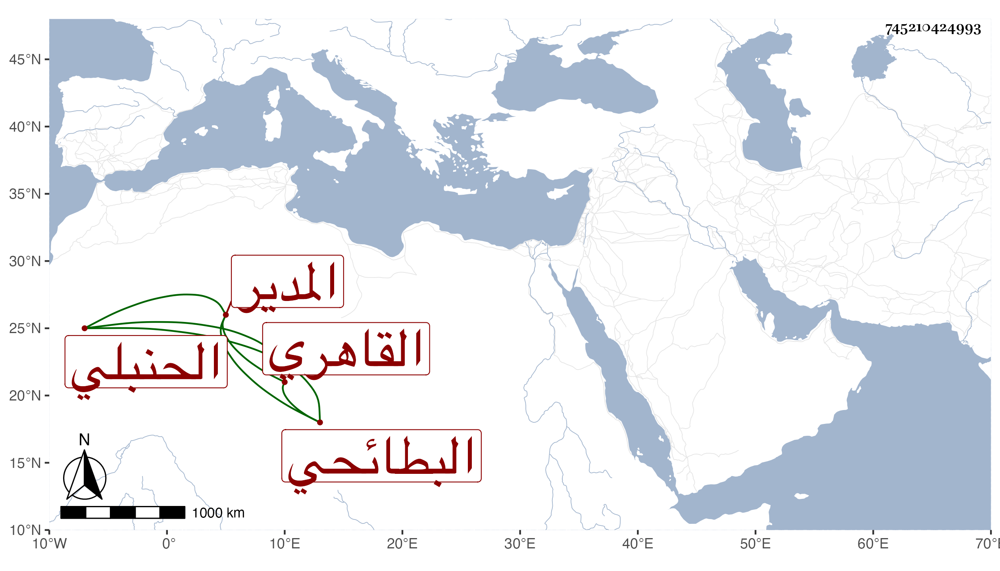

0902Sakhawi.DawLamic.ITO20230111-ara1.EIS1600.745210424993
Biography ID: 745210424993
1
علي بن محمد بن عمر بن أحمد بن محمد بن أحمد البطائحي القاهري الحنبلي المدير الشهير بالبطائحي . كان جده السراج عمر خادم البيبرسية قبل الجنيد ووالده الشهاب أحمد شيخ الرباط بها قبل التلواني . وولد هذا بالقرب من جامع الحاكم قريبا من سنة عشرين وثمانمائة وحفظ القرآن عند ناصر الدين القاصدي نسبة للقاصدية عند جامع الحاكم ، وحفظ الشاطبية وألفية النحو المنهاج الأصلي ومختصر الخرقي وعرض على شيخنا والمحب بن نصر الله والزين الزركشي وسمع عليه في آخرين وحضر دروس المحب فمن بعده ، وتنزل بالشيخونية من زمن باكير وفي غيرها من الجهات وتكسب من الإدارة بالإعلام بالموتى وبرع في ذلك مع نصحه فيه بحيث يدور الأماكن البعيدة ويعرف من يوافي أصحاب الميت غالبا وقل أن يمضي يوم بغير شغل بحيث تمول جدا فيما قيل ، وحج مرارا وقال لي أن والده حج نحو ستين .
